This method is excellent if the material is fairly long, say, two or three feet, and pliable. It is very suitable for reeds and sedges.
The thatching material is gathered into small sheaves about an inch or so thick. The butt end is bent over the thatching batten, and a few strands are then twisted round the sheaf a few times and pushed through the bunched up material to hold the end secure.
The tuft is then slipped along the thatching batten to lie alongside the preceding tuft. This thatch makes a very neat job from inside.
It is secure in all weather, and requires no tying material. If sedge or sword grasses are being used it is advisable to put a pair of socks or gloves on your hands to avoid cuts.
It is important that the long free ends overlap the two or three preceding rows. Do not push the tufts up too tight. There can be about half an inch or more between the bent-over ends on the

thatching battens. This open space will be covered by the free ends on the next row.
S TALK THATCH
This method is very quick to apply and quite efficient. It is suitable for either the plicate type of palm leaf (as shown above) or the pinnate type (shown overleaf). The stalks are simply woven between the thatch battens. The natural bend forced on the stalks will exert sufficient pressure to hold the leaves securely in position. This is the quickest and easiest of all thatching methods, and quite efficient if the palm leaves are well bunched and have a
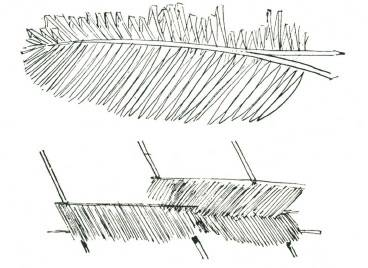
good overlap to give watershed.
S PLIT S TALK THATCH
This thatch is particularly suitable for very long pinnate leaves.
The centre rib of the palm frond is split. These split ribs are tied together and secured to the thatching battens with a good overlap.
This method eliminates the need for thatching battens and is very efficient if suitable material is easily available.
WOVEN THATCH
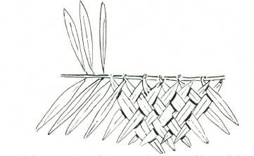
If time permits and the materials are readily available, an alternative method to the split stalk thatch is the woven thatch.
The pinnate fronds are laid flat on the ground and the leaves from one side are laid over and woven between the leaves on the other side. The entire stalk is then tied on to the framework, observing the same principle of overlap which applies to the other methods.
S EWN BATTEN THATCH

With other long, broad-leaved materials the leaves may be bent over sticks on the ground and a thin sliver of split cane or other suitable material used to sew the two sections of the leaves together. The sticks are then tied to the framework as for split stalk thatching. This method is very neat and efficient for certain materials. If green material is to be used make certain that it will not curl as it dries out. M any grass materials will curl into thin strips, and the thatch will be almost ineffective. Dead material is generally best.
RIDGE THATCHING
In thatching the ridge it is essential to cover the stitching of the
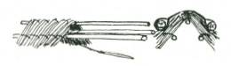
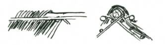
topmost row of thatching. If this stitching is covered there will be complete protection. If it is inadequately covered there will be a leak along the ridge.
The ridge thatch therefore must curl completely over the ridge pole or, better still, over a false ridge pole or, alternatively, it may stand up from the ridge and, if bound tightly, will make an efficient watershed. For pyramidal and circular huts this last is the most efficient method.
S EWN RIDGE THATCHING
With very long material two heavy poles may be slung on slings, so that they lie on either side and hold the outside edges of the ridge thatch material down.

Another method of thatching a ridge is to tie on two battens to the top of the topmost layer of thatching. The ends of the ridge thatching material sewn to these two battens must overhang the sewing of the topmost layer.
An alternative method is to sew the ridge material on to three poles, one of which acts as a false ridge, and the other two, which are sewn tightly, hang over the ridge some twelve or eighteen inches on either side of the centre pole. This ridge thatch material can be sewn on the ground in lengths of from six to twelve feet, and when the roof is ready for ridging these are laid over the actual ridge proper and the two side poles allowed to hang on either side, covering the top layer of stitching.
CROWN RIDGE THATCH
GUTTERING
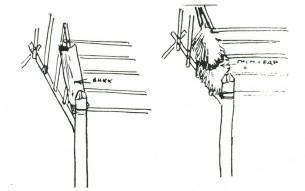
Under some conditions it may be necessary to put a “valley” in the roof, and this will require guttering. Efficient guttering can be made from wide sheets of bark inverted so that they lie with the hollow side in the valley. An alternative is the use of hollowed-out palm trunks or the extra-wide leaves of the plicate palms can be laid to overlap each other. Considerable care must be taken with this guttering if you are to have a watertight roof.
FLAS HING

There are occasions when flashing may be required. For instance, there may be a tree growing through the roof where the ridge pole is held up, or for some reason some of the structural poles or tree trunks may project through the roof thatch. When flashing is required, simply spin up a length of thin rope from grass or other soft fibrous material (see Chapter 1 “Ropemaking”) and bind thatching round the tree or pole. Continue the binding an inch or two above top of the thatching material. M ake sure that it is tight and secure. The rain will run down the tree trunk, come to the flashing binding and, seeping over it, come on to the thatch, from where it is led by natural flow to the thatch of the roofing.
RAMMED EARTH
This method of building makes a permanent structure which is well insulated and low in cost. The only materials required for the walls are earth containing certain wide proportions of clay and sand or other gritty particles. The earth must also be free from organic materials such as grass, roots and the like.
Rammed earth buildings can either be built by erecting forms-or by ramming earth in blocks (like large bricks) and laying these in courses.
Foundations and footings are made by setting large stones in clay in the foundation trench. Clay is in many ways better than concrete for rammed earth buildings, because it is impervious to moisture.
If concrete foundations are used, then it is necessary to put in a dampcourse, but with clay and stone no dampcourse is needed.
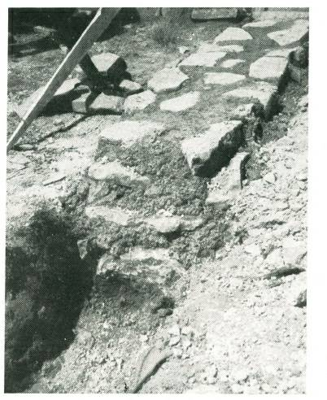
—Photo by John Culliton
FOUNDATIONS
The foundations (footings), as shown here, are large stones set in clay. The foundations extend from six to nine inches above ground level. Foundation trench is 2 ft. wide by 1 ft. deep, and lined with at least one inch of clay. After laying the stones in the clay, they are rammed to make a firm bed.
The advantage of this method of laying foundations is that there is no cost, and the method is speedy.
One man can dig and lay fifteen to twenty feet of foundation in a day.
The foundation must extend above ground level so that in the event of very heavy rain the surface run-off will not reach to the rammed earth wall.
S OIL QUALITIES FOR RAMMED EARTH
Any “heavy” loamy soil is suitable for rammed earth building.
The soil must be just right for its moisture content. To find out the right “consistency”, roll up a ball of the earth (about the size of a golfball) between the palms and drop it from a height of about one foot. If the ball breaks up, the soil is too dry, and moisture must be added before ramming.
If the ball does not break from a foot high drop, then hold the ball above the head and drop it again. If the ball does not shatter into small fragments with a six or seven foot drop, then the soil is too moist and must be allowed to dry out before ramming.
The qualities in the soil are easily determined. There should be
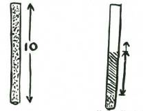
not more than 70 per cent sand, and not less than 30 per cent.
There should be not more than 70 per cent clay and silt, and not less than 30 per cent.
If Sand or Grit is between three-tenths and seven-tenths soil will be O.K.
To discover if the soil is all right for rammed earth work, take a glass tube ten inches long, or, alternatively, divide a glass tube into ten equal divisions. Dry some of the earth, crumble it to fine powder, and fill the tube. Take the exact quantity which was in the tube and put it into a billy or dish, and wash thoroughly in running water until all the clay and silt particles have been washed out. Dry the remainder and then put back into the tube. The level will tell you the approximate percentage of clayey content that was in the soil.
If the soil has too much clay it will crack; if too little clay or too much sand or organic matter it will crumble.
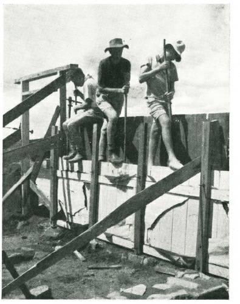
—Photo by John Culliton.
This photo shows a rammed earth Hostel in course of erection. This hostel is to provide snow accommodation for 20 people. It is 35ft. by 22ft., 8ft. walls,
1ft. thick. The total cost of the building is estimated to be under $300. The only materials bought are iron for the roof, timber for roof, and floor, doors, windows, and 5 bags of cement for facing of the rammed earth wall and also for a 3-inch top sill for same.
FORMS
Forms can be made and bolted together, and in these the earth can be rammed or, alternatively, moulds can be made and the earth rammed into these to form blocks, and these blocks are then laid in courses like large bricks.
If forms are used they need not be more than two or three feet high and six to eight feet long. The forms are held by bolts which, when tightened up, clamp the form to the wall.
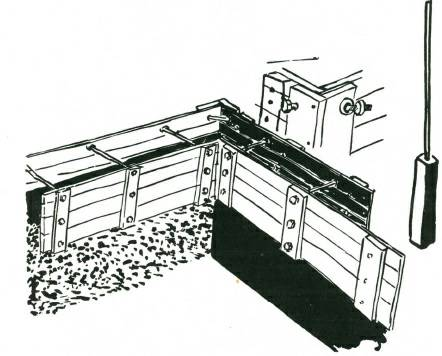
When ramming, shovel in three or four inches of earth and ram until the earth “rings”. This is quite a definite sound, unmistakable from the soft “thud thud” of the first ramming strokes.
Ramming is hard work, and tiring.
When the layer is “ringing”, throughout its length, shovel in another three or four inches of soil, and repeat.
Rammers should be from 6 to 8 lb. A hardwood base, about 4 in. x 4 in. x 10 in. long, handle maybe a 5 ft. length of gaspipe.
If moulds are used they must be of a design which can be
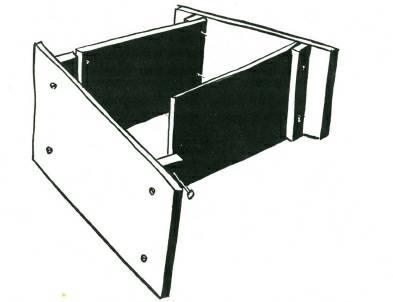
quickly “knocked down” to remove the rammed earth block, and as quickly re-assembled.
One man can fill and ram about nine to twelve cubic feet in a day.
Rammed earth walls should be at least nine to ten inches in thickness for an eight-foot wall, or twelve to fifteen inches if a top structure or greater height are required.
Rammed earth walls may be protected from driving rain either by providing a wide overhang to the eave, by plastering with a

cement or lime mortar, or by giving a cement “skin” by brushing on a thick cement-sand mixture (one-to-two proportion). However, even without the cement skin, rammed earth will stand up to a hundred years or more of weather.
LOG CABINS
Where timber is plentiful and white ants (termites) not prevalent and a structure of permanence is required, the Log Cabin is suitable. It is permanent, solid, and easy to build. The construction is simple. Cut your logs (which should be of roughly uniform diameter) to within a few inches of the required lengths.
Lay the bed logs, which should be the heaviest logs. See that these are laid square. Where the end logs lie across the back and front logs, halve or scarf the sites for the logs.


The remainder of the construction follows exactly the same method. The logs are carved into each other.
These are two methods of scarfing logs for building. The flat surface of the bottom log always “falls” outwards, so that when any rainwater blows in it will not find a place for easy lodgement, but will drain away because of the natural slope of the bottom of the scarf. Chinks between the logs should be filled with clay.
MATERIALS FOR LAS HINGS
In bushcraft work it is assumed that no manufactured materials are available, and therefore in hut making lashing must be used when no nails are available. Rope, too, may be unprocurable, and it is then necessary to know what natural materials can be used and
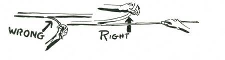
how.
For lashing, sewing, and tying, any ground or tree vine which has length, strength and pliability will serve. Length, of course, is visible and easily found, but tests for strength and pliability should be applied. The test for strength is simply to exert a steady straight pull on the material. You will be able to judge its breaking strain if under sixty or eighty pounds. The test for pliability is to tie a thumb knot in the vine and gently pull the knot tight. If the vine snaps or cuts upon itself, it lacks pliability and must be discarded.
In addition to ground and tree vines, the outer skin of the long leaves of most palms may be used for ties. To harvest these, nick the hard outer shell with a cut about one-quarter inch wide and an eighth of an inch deep. Start the outer cane splitting, and to prevent it “running off” bend the thick portion away from the thin.
This is most important. If you pull the thin strip and bend it away from the main stalk, it will split for a few feet and then “run off.” This principle of bending AWAY from the tendency to run off applies to all canes, palms, vines, bamboos and barks.
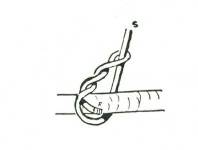
BARKS
The inner bark of many shrubs and trees, alive or dead, also makes excellent lashing material. Strip down to the required thickness, but watch out for weak places.
S PECIAL KNOTS
M any of the sedges have length and strength and may be used for lashing and sewing work.
Nearly all the bulrushes can serve as lashings, and many of the
“sword grasses” or sedges, but be careful handling these, as the razor-sharp edge can make nasty little cuts in your skin which poison easily. If handling any of the sword grasses, put a pair of socks on your hands and so save your skin.
S EDGES AND BULRUS HES

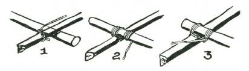
These green materials require special knots if they are to be used to best advantage. For example, the customary start of a square lashing is with a clove hitch (see also Chapter 6 “Knots and
Lashings”), but a clove hitch on “green” bush material is useless.
The natural springiness in the material will cause the start of the knot to open. ALWAYS start a lashing with a timber hitch, as shown above.
And ALWAYS see that the free end passes straight through the
“eye” and does not come back against the eye. If it does, it will probably cut itself.
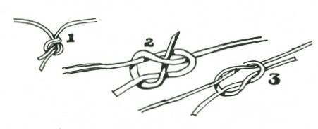
Start your lashing with a timber hitch, as Fig. 1; make three to six complete turns around the two poles, and “work” them together as you tighten the lashing at each turn (Fig. 2).
The trapping turns (Fig. 3) follow. These trapping turns close the lashing in, and tighten the whole job. Finish off by passing the free end of the material through an opening of the lashing and finish with a couple of half hitches pulled tight.
JOINING GREEN MATERIALS
An overhand knot (Fig. 1) will often serve, but if the material
“cuts,” try a sheet bend (Fig. 2) or a reef knot (Fig. 3). There are many ways of joining green materials either by plaiting or by spinning into rope. These are fully explained in Chapters 1 and 6.
WALL PEGS
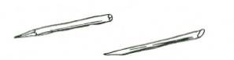
Wall pegs, and all stakes which are to be driven into the ground, must be straight, have the head bevelled and the foot pointed. This is shown on the illustration on the left. Avoid pointing with a single cut, as illustrated on right.
CHAPTER 3
CAMPCRAFT
With the only tool, a machete or a sharp knife, it is practical and easy to set up a camp in comfort. Everything one needs for bed, table, seats and chairs, cooking, and even lighting is usually available in the area immediately around the camp.
A small amount of knowledge is needed and some of this is given in this book.
Campcraft, like all the other skills in bushcraft develops the powers of observation to a remarkable degree, and with this the ability to adapt or improvise.
It is applicable by all who camp, regardless of whether the camping is a once-a-year venture with a car and auto tent, or a weekend adventure with a pack on one’s back.
There need be no discomfort for anyone in camping if they have knowledge of how to set up a camp in comfort.
A properly made camp bed can be as restful as an inner spring mattress, and no food is more flavoursome than when cooked in the out-of-doors.
If the camper does not know how to camp in comfort there will be times during heavy rain when wood appears too wet to take fire, or when the wind is so high that the heat of the fire is blown under and away from the water in the billy the camper is trying to boil, or when ants or bush rats find the food supply.
This book shows many things you can do to make your camping more comfortable, and considerably safer.
PEGS AND S TAKES
Campcraft without equipment is totally different from campcraft with equipment... and in some ways, “doing without”
can be more fun. This Bushcraft book shows things that you can make and do in camp when you have no equipment except a cutting tool. Some items will be new to even the most experienced camper, and there will be much that is of value to the Boy Scout and his brother in woodcraft.
Camping without equipment calls for a really sharp tool, and a good deal of common sense. A good machete is probably the most useful of all tools for bush work. M ostly you will want sticks, either for pegs or stakes, or forks or hooks, and these generally can be cut from windblown branches close to the site of your camp. It is always preferable to use dead timber rather than growing wood.
By using dead (but not rotten) wood you are clearing the forest floor of debris, and by avoiding cutting green wood you are helping to conserve the forests.
BUS H CAMPCRAFT
Even a simple item like a stake or a peg must be cut properly, and if it is to be driven into the ground it must have the head bevelled and the toe properly pointed.
THIS IS THE RIGHT WAY
This stake will drive cleanly into the ground. It will not split when being driven because the head is properly bevelled.
THESE ARE WRONG
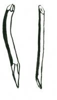
Both these stakes will be a failure. One will not drive because it has a bend, and this deflects the blow. The other will either split at the head, or drive crooked, because the toe is cut at an angle.
FORKS
Generally the correct sort of fork to select is one with a perfectly straight drive from the head to the toe, and with the forked stick coming off at an angle. A fork which is to be driven into the ground must have the head bevelled and the toe pointed.
THIS FORK IS CORRECT
THESE FORKS ARE WRONG


These forks cannot be driven. Left: If you try to hit one of the forks, the blow will be
There is a perfectly straight deflected by the angle.
drive from the bevelled head
If you try to hit in the right through to the toe. This crotch, the fork will fork will drive into the ground split.
and stand securely.
Right: Because the main stick is not straight, this fork will not go into the ground.
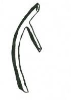
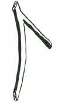
M ost beginners think that the wrong way will work out all right... everyone does...the first time; then you learn that it pays to spend five minutes finding the right shaped stake or fork, rather than trying-to make do with a poorly selected stick.
HOOKS
Unless hooks are to be driven into the ground, less care is required for their selection.
THIS HOOK WILL DO THE JOB
AND SO WILL THIS
After you have selected the stake, fork or hook, and before you
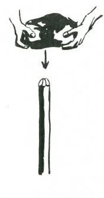
trim it, make sure that the wood, though dead, is not rotten. The inner wood must be sound.
DRIVING S TAKES
Stakes can be driven into the ground either by using the back of an axe for a maul, or if an axe is not available, a large stone, held in the two hands, and “pulled” down to the head of the stake, will drive quite effectively. When using a stone, if it is flat, use the edge rather than the flat. The edge will put more weight behind the drive, and there will be less chance of the stone breaking in two with the force of the blow. If stones of a convenient size are not available, a club with one flat face can be quickly fashioned with a tomahawk or heavy knife, and this will serve effectively.
CAMP KITCHENS
The camp kitchen should be sited so that the breeze will not blow the smoke into the cook’s face. This is quite easy when you know which direction the winds blow, both in the morning and the evening. The morning breeze (anabatic, if you want to be technical)
blows up the valley, because the warm air of the valley floor rises;
and the evening breeze (catabatic) blows down the valley.
Therefore set your kitchen so that the cook will face neither up valley nor down valley from the fire, but sideways. Thus the smoke will blow past him, and he can cook in comfort.
The kitchen should be sited on a slight rise so that during rain it will not be flooded. The fireplace, in badly drained ground, should be built up a few inches above ground level. Select the place for your fire, and build the kitchen round it.
FIREPLACES
If stones are available, build a wall to enclose the fire. This wall
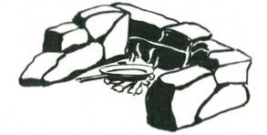
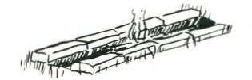
should be about nine or ten inches high, and the opening should be parallel to the valley. Do not take stones from a watercourse. They will explode in the fire.
You will want a means of suspending your billies, and the most simple is a stick across the end walls.
A trench fireplace is an efficient cooking place, but only suitable in clayey soil and if there is no likelihood of flooding.
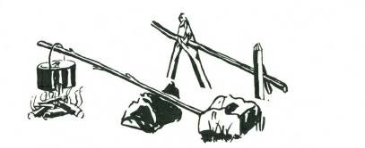

A third method is a single stick, lying over one of the end stones, and with its farther end held down either under a hooked stake or by a heavy stone.
Two simply erected tripods of interlocking forked sticks at either end, with a cross stick, is another method of suspending your billies over the fire. This latter has the advantage that, by changing the base of the tripods, the height of the billy above the flames can be varied.

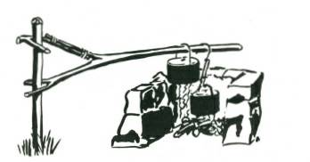
Another method to suspend your billies is by an overhead stick supported by two forked stakes driven into the ground at either end of the stone wall.
The best method of all, in a permanent camp, calls for a single straight stake driven into the ground at one side of the fireplace,
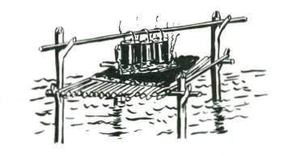
and from this single stake a swinging gantry is hung. The height of the gantry on the upright stake can be adjusted to any height above the fire. It will swing free of the flames, and the billies can be taken off without burning your fingers. Although it may take five minutes to make, it will save burnt fingers and spilt or spoilt meals.
In flooded country, or in a marsh or swamp land, it may be impossible to find a spot of dry land on which to light a fire. One way to overcome this is to build a raised platform with its floor a few inches above the water level. The sticks which make the base of the platform are covered with a thick layer of mud. On this you can light your fire and cook your meal.
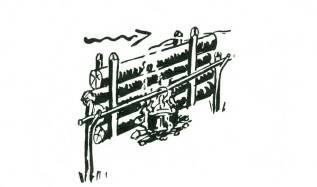
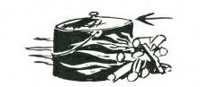
In the absence of stones, and where green wood of no value
(such as sucker growth) is plentiful, a reflector fireplace may commend itself to you, particularly if the location is windy. The reflector should be on the windward side of the fire, so that the wind, passing over it, draws the flames up to the top of the reflector and then across.
When you want to boil a billy quickly in an open space in a very high wind, the flames will be blown away if, the billy is suspended. Woodsmen have a trick that is worth using under such conditions. Place the billy on the ground, and build the fire to windward and on both sides of the billy. The wind will blow the hot flames around the sides and your billy will soon boil.
BILLY HOOKS AND FIRE TONGS
All of these methods of suspending billies over a fire are improved with the use of billy hooks, and these can be easily made by cutting a few hooked sticks about half an inch in diameter, and varying in length from, say, six to ten inches. At the end farthest from the hook, a single deep nick is cut into the wood, so that the direction of the cut is away from the hook. The wire handle of the billy will sit safely in this nick and the billy stick from which the billy hooks hang will be sufficiently far from the flames so that there will be little chance of it being burnt through.
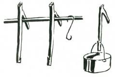
It is preferable to the the side opposite to the hook.